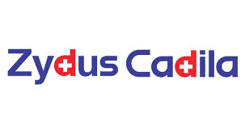

Industrial Training
Zydus Lifesciences Ltd. or Cadila Healthcare Ltd.
Zydus Lifesciences Limited, formerly known as Cadila Healthcare Limited, is an Indian multinational pharmaceutical company headquartered in Ahmedabad, which is primarily engaged in the manufacturing of generic drugs. The company ranked 100th in the Fortune India 500 list in 2020.
For more information on Zydus Lifesciences ltd. visit zyduslife.com
Training Experience
Process Engineering :
During my industrial training at Zydus Lifesciences Ltd., I had the opportunity to delve deeply into both the synthesis and process engineering aspects of pharmaceutical manufacturing. I worked on understanding the synthesis of key Active Pharmaceutical Ingredients (APIs) like Omeprazole, where I learned to optimize reaction conditions to maximize yield. This involved mastering various stages of the reaction, such as the nucleophilic attack of sulfur from the thiol group on methylene chloride and the subsequent oxidation of the thioester group with hydrogen peroxide
A key highlight of my experience was learning to use Aspen HYSYS, a process simulation software that allowed me to model and simulate the reaction pathways, heating, and cooling cycles, and solvent recovery systems used in Omeprazole synthesis. With HYSYS, I could simulate and optimize the batch reactor parameters, reducing time cycles and improving solvent recovery, which was crucial in scaling up the process while maintaining cost-efficiency.
In addition to simulation, I gained an onsite experience of how with a variety of industrial equipment are operated, such as stainless steel and glass-lined reactors, paddle and anchor agitators, and filtration systems like the Agitated Nutsche Filter. These are essential for maintaining control over reaction environments, managing heat transfer, and ensuring effective mixing of reactants. I also worked with steam tray dryers and multi-effect evaporators (MEE) to optimize the drying and solvent recovery processes, further contributing to cost reduction and process efficiency in the industrial production of APIs
Process Developement Lab
During my training at Zydus Lifesciences Ltd., I had the privilege of working under the guidance of Mr. Jayesh Ranpariya, who played a pivotal role in mentoring me throughout my experience in process engineering and synthesis. His extensive knowledge of industrial processes and equipment was invaluable as I navigated the complexities of pharmaceutical production, particularly in learning how to operate and optimize various reactors and dryers. Under his supervision, I developed a strong understanding of both the theoretical and practical aspects of chemical engineering, which significantly contributed to my skillset in process optimization and scale-up techniques.
In the Process Development Lab, I gained hands-on experience in refining the synthesis routes of APIs by experimenting with various process parameters such as temperature, pressure, and solvent selection. This lab served as the core of innovation, where processes were optimized for industrial-scale production. One of the primary tasks was route selection for synthesis, ensuring that the chosen pathway minimized waste and cost while maximizing yield. We employed techniques such as mass balance calculations to ensure that reactants were fully utilized and solvent recovery methods to enhance efficiency. The lab also emphasized the importance of reducing time cycles through the careful adjustment of parameters, ensuring that production was both energy-efficient and cost-effective.
Additionally, the lab focused on cost reduction strategies, including solvent ratio optimization and Design of Experiments (DOE) to fine-tune reaction conditions. Through DOE, we were able to systematically test and identify the most effective reaction conditions, ultimately improving the yield while reducing the use of raw materials. The insights gained from the Process Development Lab were critical in transitioning small-scale laboratory synthesis to large-scale industrial production, ensuring that the processes were scalable, sustainable, and economically viable
For complete report on industrial training at Zydus Lifesciences ltd. visit In Plant Training Report (Zydus Lifesciences Ltd.)